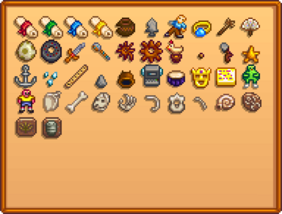

Open main menu
Home
Random
Log in
Settings
About Stardew Valley Wiki
Disclaimers
Stardew Valley Wiki
Search
Template:Collections Artifacts
Language
Watch
Edit

Dwarf Scroll I
Dwarf Scroll II
Dwarf Scroll III
Dwarf Scroll IV
Chipped Amphora
Arrowhead
Ancient Doll
Elvish Jewelry
Chewing Stick
Ornamental Fan
Dinosaur Egg
Rare Disc
Ancient Sword
Rusty Spoon
Rusty Spur
Rusty Cog
Chicken Statue
Ancient Seed
Prehistoric Tool
Dried Starfish
Anchor
Glass Shards
Bone Flute
Prehistoric Handaxe
Dwarvish Helm
Dwarf Gadget
Ancient Drum
Golden Mask
Golden Relic
Strange Doll
Strange Doll
Prehistoric Scapula
Prehistoric Tibia
Prehistoric Skull
Skeletal Hand
Prehistoric Rib
Prehistoric Vertebra
Skeletal Tail
Nautilus Fossil
Amphibian Fossil
Palm Fossil
Trilobite
Dwarf Scroll I
Dwarf Scroll II
Dwarf Scroll III
Dwarf Scroll IV
Chipped Amphora
Arrowhead
Ancient Doll
Elvish Jewelry
Chewing Stick
Ornamental Fan
Dinosaur Egg
Rare Disc
Ancient Sword
Rusty Spoon
Rusty Spur
Rusty Cog
Chicken Statue
Ancient Seed
Prehistoric Tool
Dried Starfish
Anchor
Glass Shards
Bone Flute
Prehistoric Handaxe
Dwarvish Helm
Dwarf Gadget
Ancient Drum
Golden Mask
Golden Relic
Strange Doll
Strange Doll
Prehistoric Scapula
Prehistoric Tibia
Prehistoric Skull
Skeletal Hand
Prehistoric Rib
Prehistoric Vertebra
Skeletal Tail
Nautilus Fossil
Amphibian Fossil
Palm Fossil
Trilobite
Description
This template displays the collection page for artifacts.
Use
{{Collections Artifacts}}